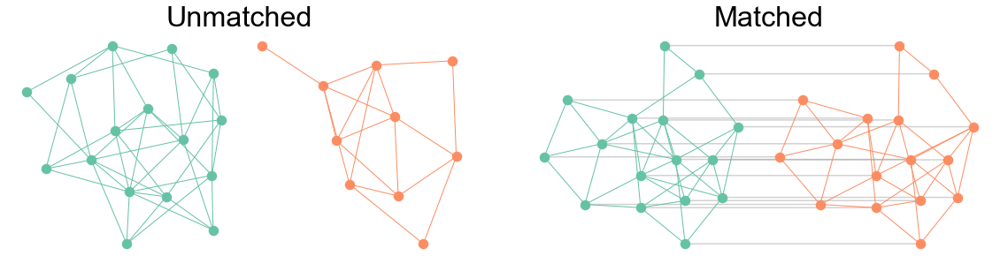

Unmatched vs. matched networks
Unmatched vs. matched networks#
from pkg.utils import set_warnings
set_warnings()
import datetime
import time
import matplotlib.pyplot as plt
import networkx as nx
import numpy as np
from graspologic.simulations import er_corr, er_np
from matplotlib.axes._axes import _log as matplotlib_axes_logger
from matplotlib.patches import ConnectionPatch
from myst_nb import glue as default_glue
from pkg.data import load_network_palette
from pkg.io import savefig
from pkg.plot import set_theme
# to deal with warning caused by networkx
# REF: https://stackoverflow.com/questions/55109716/c-argument-looks-like-a-single-numeric-rgb-or-rgba-sequence/61479357 # noqa: E501
matplotlib_axes_logger.setLevel("ERROR")
DISPLAY_FIGS = False
FILENAME = "unmatched_vs_matched"
rng = np.random.default_rng(8888)
def gluefig(name, fig, **kwargs):
savefig(name, foldername=FILENAME, **kwargs)
glue(name, fig, prefix="fig")
if not DISPLAY_FIGS:
plt.close()
def glue(name, var, prefix=None):
savename = f"{FILENAME}-{name}"
if prefix is not None:
savename = prefix + ":" + savename
default_glue(savename, var, display=False)
t0 = time.time()
set_theme(font_scale=1.25)
network_palette, NETWORK_KEY = load_network_palette()
p = 0.3
glue("p", p)
rho = 0.9
glue("rho", rho)
# sample two networks
np.random.seed(888)
A1 = er_np(16, p)
A2 = er_np(10, p)
np.random.seed(8)
A3, A4 = er_corr(16, p, rho)
g1 = nx.from_numpy_array(A1)
g2 = nx.from_numpy_array(A2)
g3 = nx.from_numpy_array(A3)
g4 = nx.from_numpy_array(A4)
fig, axs = plt.subplots(
1,
5,
figsize=(20, 5),
gridspec_kw=dict(
wspace=0,
width_ratios=[1, 1, 0.2, 1, 1],
),
)
draw_kws = dict(with_labels=False, node_size=100)
ax = axs[0]
pos1 = nx.kamada_kawai_layout(g1)
nx.draw_networkx(
g1,
pos=pos1,
ax=ax,
node_color=network_palette["Left"],
edge_color=network_palette["Left"],
**draw_kws,
)
ax = axs[1]
pos2 = nx.kamada_kawai_layout(g2)
nx.draw_networkx(
g2,
pos=pos2,
ax=ax,
node_color=network_palette["Right"],
edge_color=network_palette["Right"],
**draw_kws,
)
ax = axs[3]
pos_corr = nx.kamada_kawai_layout(g3)
nx.draw_networkx(
g3,
pos=pos_corr,
ax=ax,
node_color=network_palette["Left"],
edge_color=network_palette["Left"],
**draw_kws,
)
ax = axs[4]
pos2 = nx.kamada_kawai_layout(g2)
nx.draw_networkx(
g4,
pos=pos_corr,
ax=ax,
node_color=network_palette["Right"],
edge_color=network_palette["Right"],
**draw_kws,
)
for i in range(len(A3)):
con = ConnectionPatch(
xyA=pos_corr[i],
xyB=pos_corr[i],
coordsA="data",
coordsB="data",
axesA=axs[3],
axesB=axs[4],
color="dimgrey",
alpha=0.3,
linestyle="-",
linewidth=1.5,
)
axs[2].add_artist(con)
for ax in axs:
ax.axis("off")
fig.text(0.25, 0.9, "Unmatched", va="center", fontsize="x-large")
fig.text(0.68, 0.9, "Matched", va="center", fontsize="x-large")
fig.set_facecolor("white") # not sure why necessary in VS code for this plot
gluefig("unmatched_vs_matched", fig)

Fig. 2 Example of a pair of unmatched networks (left) and matched networks (right). All networks are sampled from the Erdos-Renyi model with connection probability 0.3. In the unmatched case, there is no 1-to-1 correspondence between nodes in one graph and nodes in the other. Note that the two networks do not even have the same number of vertices. In the matched case, there is a 1-to-1 corresponednce between nodes as indicated by the grey lines. These two networks have an edge correlation of which is why they look similar, though not isomorphic.#
elapsed = time.time() - t0
delta = datetime.timedelta(seconds=elapsed)